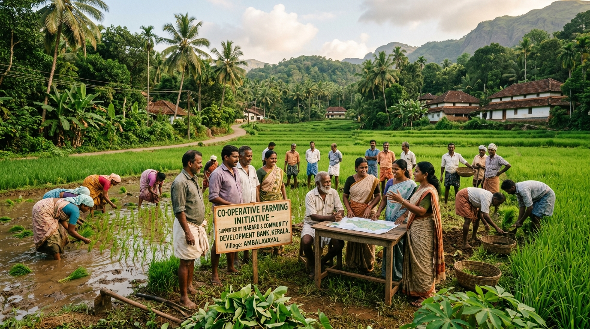

For more than seven decades, Perumatty Service Co-operative Bank has been serving farmers, families and the wider community with a strong commitment to financial inclusion, agricultural development and social progress.

Guided by a legacy of cooperative trust and rural progress in Palakkad, Kerala.
We actively support regional development through targeted interventions in:
Perumatty Service Co-operative Bank is becoming the heartbeat of the country in Perumatty, a region synonymous with agricultural prosperity, bordered by Tamil Nadu to the south and the Shokanashini River to the north in Chittoor, Palakkad district.
The bank's progress is based on a tradition of seven and a half decades. Since our inception in 1949, the bank has been continuously operating in profit, reflecting our sound financial responsibility, operational excellence, and the unwavering trust of our members.
Operating under a prestigious Class A classification, we serve 31,412 members and stand proudly among the leading cooperative institutions in the district, championing financial security for all.
A timeline of dedicated cooperative growth, farmer support, and regional development.
Founded on cooperative principles to provide reliable financial services to rural Palakkad.
Demo farm started at Kampalathara, successfully cultivating and popularizing vegetable crops.
Micro-agriculture, drip irrigation, and Israeli precision farming technologies introduced.
Widespread assistance extended to local farmers, self-help groups, and families.
Continuing the journey of progress and development with the country and community.
The bank was the first in Kerala to implement micro-agriculture and has achieved significant progress in the agricultural sector. The demonstration farm started at Kampalathara in 2007 successfully cultivated various vegetable crops and demonstrated new farming opportunities.
To support precision farming based on Israeli technology, the bank facilitated dealerships of leading companies in this field. Technical assistance was provided directly to farmers to support modern and sustainable agricultural practices.

The bank provided capital loans to Perumatty Agropros and Perumatty Agroservice Center to promote scientific farming methods. A dedicated Farmers Service Center operates under the bank to support members directly.
Small and marginal farmers are supported through affordable rental access to essential machinery, including:
The Agro Service Center was established under the RKVY scheme to help introduce modern agricultural technologies. The bank provided financial assistance for these initiatives.
Kera Chittoor, started in collaboration with the bank, has supported coconut farmers and promoted sustainable rural livelihoods. The bank has also strengthened the agricultural and dairy sectors by distributing chemical fertilizers and cows at subsidized rates to dairy farmers.
The bank's interventions extend far beyond banking, making strong impacts in rural development, farmer welfare, agriculture, social welfare, women's empowerment, and community development.
Real numbers illustrating our strong backing for regional growth and agricultural prosperity.
The bank operates under Class A classification with 31,412 members and stands among the leading cooperative institutions in the district. The bank's continuous profitable operation since its inception in 1949 reflects its commitment to responsible and sustainable cooperative banking.
The Perumatty Service Co-operative Bank also serves its members through its branch at Vilayodi.
Whether you are looking for reliable banking services, secure savings, financial support or assistance for your agricultural journey, Perumatty Service Co-operative Bank is here to serve the community.